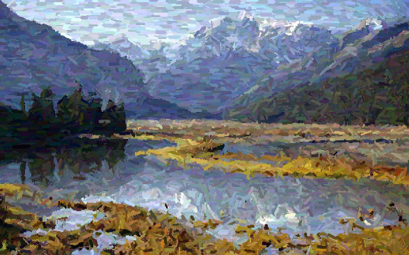
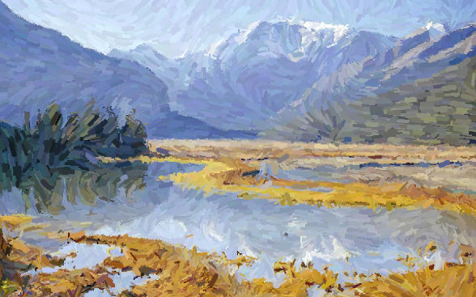
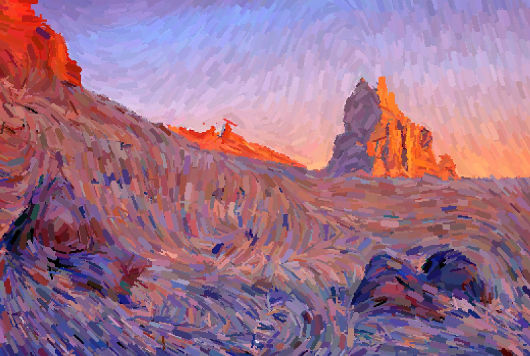
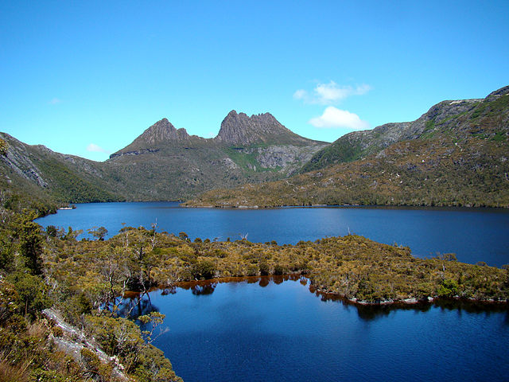
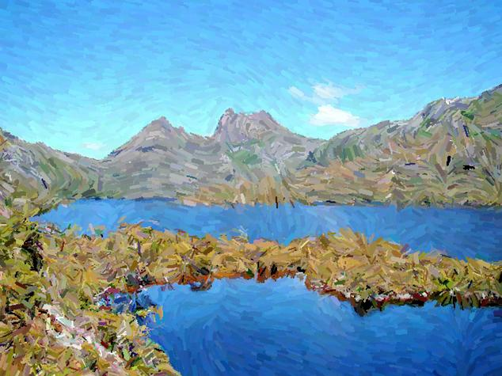

CSC320 Painterly Renderer
This school year I took CSC320: Introduction to Visual Computing. One of our assignments was to make a program that can turn a photograph into a painting. We were given starter code, a paper about painterly rendering, and some mandatory objectives. Outside of that, we were allowed to just "go nuts."
So I went nuts
You can read the project outline here, which includes links to the handout and the paper that describes the process we used.
Going as far as the assignment required resulted in a program that did this:
| Input | Output |
|  |
It looks like vomit.
The program works by randomly selecting positions in the image and drawing a stroke. The colour of the stroke is the colour of the pixel at that point, and its orientation is determined by the orientation of nearby edges.
To make the image look more artisanal the colour and orientation are twiddled a bit. This is where the vomit look comes from. Because the colour is in RGB a small change in any channel means a big change to the colour's hue. This effect is especially pronounced when the colour is a shade of gray: suppose the red channel goes up and the blue and green channels go down, then we'll have a shade of red. An artist wouldn't make this mistake when they were going for gray, so the program shouldn't, either.
To fix this problem I changed all the colours to HSV space, or hue, saturation, and value. This colour space is more in line with how humans think about colour; you say a colour is "yellowish green" not "reddish green.. with more green." In this colour space the level of hue change can be easily controlled, as can value and saturation.
This brings me to the second reason the picture looks like vomit, it's too dark and too saturated. What I want is a gorgeous Van Gogh with bright pastel colours. Pastel colours are low saturation high brightness. Because we're working in HSV it's easy to turn a colour into its pastel version, just divide the saturation in half and take the square root of the value.
I made a few other changes to the final code to suit my tastes, but I think the colour modification is the most striking. Here is my final program:
| Input | Output |
|  | |
 |
 |
|  |  |
The code for the program can be found in its github repo, as well as the report I made for the assignment.